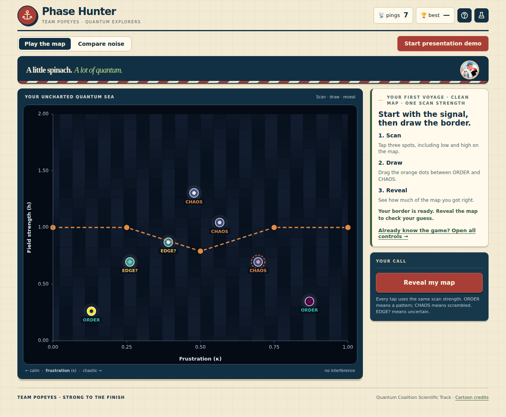

Phase Hunter and a week at Q-SITE Hacks 2026
Three podium finishes, a close IonQ fourth place, and Phase Hunter: a playable experiment about quantum phases and noise.

Three certificates from Q-SITE Hacks 2026, a near miss, and a game about noisy quantum measurements.
At the University of Toronto’s Q-SITE Hacks, part of Qiskit Fall Fest 2026, our team placed third in the IBM Quantum Coding Challenge and third in the Overall Coding Challenge. We were runner-up in the Quantum Coalition Open Challenge’s Scientific Track. In the IonQ Championship, we finished fourth, 0.44 points off the podium.
Phase Hunter
For the Scientific Track, Paul Jeon, Sumedhaa Ruhil, and I built Phase Hunter. It turns a question about quantum spin phases into a playable experiment: with only a handful of measurements, can you find the hidden phase boundary in a ring of quantum spins?
The game is the front end of a reproducible PennyLane simulation. Its notebook compares clean, noisy, and error-mitigated phase maps. Two findings stayed with us. Noise reduced the correlation signal and the area of the correctly mapped phase in different ways: the stripe phase lost more signal, while the aligned phase lost more map area. Under the smallest shot budget we tested, a simpler lower-noise baseline outperformed the correction method we tried. These are results from our simulation, not claims about a physical device.
Watch the Phase Hunter demo ↗ · Explore the code and notebook ↗
Team Popeyes, continued
The team name has a history. Hiram Zúñiga came up with “Team Popeyes” when we were teammates at Yale’s YQuantum hackathon. I carried it into Q-SITE with Paul and Sumedhaa. Consider this an acknowledgment to Hiram and a continuation of the legacy: a little spinach, a lot of quantum.
Thank you to Paul and Sumedhaa for building this with me, and to the Q-SITE organizers, judges, and the University of Toronto for hosting. I’m also grateful to IBM Quantum and Qiskit, IonQ, Xanadu and PennyLane, the Quantum Coalition, PINQ², and AWS for making the challenges and workshops possible.